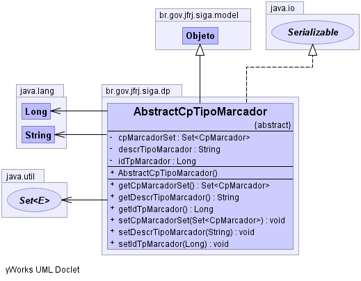

br.gov.jfrj.siga.dp
Class AbstractCpTipoMarcador
java.lang.Object
 br.gov.jfrj.siga.model.ObjetoBase
br.gov.jfrj.siga.model.Objeto
br.gov.jfrj.siga.dp.AbstractCpTipoMarcador
br.gov.jfrj.siga.model.ObjetoBase
br.gov.jfrj.siga.model.Objeto
br.gov.jfrj.siga.dp.AbstractCpTipoMarcador
- All Implemented Interfaces:
- java.io.Serializable
- Direct Known Subclasses:
- CpTipoMarcador
public abstract class AbstractCpTipoMarcador
- extends Objeto
- implements java.io.Serializable
- See Also:
- Serialized Form
-
-

| Methods inherited from class java.lang.Object |
clone, finalize, getClass, hashCode, notify, notifyAll, wait, wait, wait |
idTpMarcador
private java.lang.Long idTpMarcador
descrTipoMarcador
private java.lang.String descrTipoMarcador
cpMarcadorSet
private java.util.Set<CpMarcador> cpMarcadorSet
AbstractCpTipoMarcador
public AbstractCpTipoMarcador()
getIdTpMarcador
public java.lang.Long getIdTpMarcador()
setIdTpMarcador
public void setIdTpMarcador(java.lang.Long idTpMarcador)
getDescrTipoMarcador
public java.lang.String getDescrTipoMarcador()
setDescrTipoMarcador
public void setDescrTipoMarcador(java.lang.String descrTipoMarcador)
getCpMarcadorSet
public java.util.Set<CpMarcador> getCpMarcadorSet()
setCpMarcadorSet
public void setCpMarcadorSet(java.util.Set<CpMarcador> cpMarcadorSet)